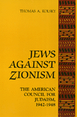

The first full-scale history of the only organized American Jewish opposition to Zionism during the 1940s
The first full-scale history of the only organized American Jewish opposition to Zionism during the 1940s


 The first full-scale history of the only organized American Jewish opposition to Zionism during the 1940s
The first full-scale history of the only organized American Jewish opposition to Zionism during the 1940s

|  |
Jews Against ZionismThe American Council for Judaism, 1942-1948Thomas A. Kolskypaper EAN: 978-1-56639-009-5 (ISBN: 1-56639-009-5) |
"[A]bsorbing and challenging."
—The New York Times Book Review
This is the first full-scale history of the only organized American Jewish opposition to Zionism during the 1940s. Despite extensive literature on the Zionist movement, the Jewish opposition to Zionism has received only marginal and usually negative attention. In this impartial study, Thomas A. Kolsky examines the neglected phenomenon of Jewish anti-Zionism, its roots, and its results.
In 1942, a number of dissident Reform rabbis founded the American Council for Judaism, the first and only Jewish organization created to fight against Zionism and the establishment of a Jewish state. Emphasizing the purely religious nature of Judaism and unequivocally rejecting Jewish nationalism, the Council supported free Jewish immigration and equal rights for Jews throughout the world. For Palestine, specifically, it advocated establishment of a democratic state wherein all citizens, regardless of their religion, would enjoy equal political rights.
Summarizing both the history of Zionism and the history of American Jews, Kolsky traces the effects of the Holocaust on the Zionist movement and the personalities that shaped the leadership of the Council. Its position toward Zionism has particular contemporary relevance in understanding the historical relationship between Israel and the Palestinians.
"Kolsky tells well...the story of the ACJ in its prime"
—The Christian Century
"The American Council for Judaism['s]...story is now ably told by Thomas Kolsky.... In the tragedy of the European Jews and the saga of Israel's founding, the American Council for Judaism is a footnote, but not an insignificant one. Many of its fears have been realized...."
—The Philadelphia Inquirer
"This book is an excellent antidote to the stereotypical images associated with 'anti-Zionism'...Kolsky has documented [the ACJ] with objectivity and understanding."
—Middle East Journal
"[The book] has a particularly pertinent message for a U.S. administration sponsoring a Middle East 'peace process' while at the same time closing its doors to emigrating Soviet Jews.... [Kolsky's] book helps bring into the open the ghosts that have been well-closeted for over forty years."
—Journal of Palestine Studies
"Even today, the American Jewish community generally remembers the American Council for Judaism as being a group of �cowardly traitors.� Kolsky has done an excellent job of undermining this view. He presents the members of the Council as being a group of well-meaning and idealistic men who were the last champions of a liberal ideology rooted in the Enlightenment."
—Aaron Berman, School of Social Science, Hampshire College
"Kolsky has written a dispassionate yet gripping history of this star-crossed mission.... [He] provides rich detail in describing the efforts of the ACJ to win over American Jews and policy makers.... We are in Thomas Kolsky's debt for retelling the story."
—American-Arab Affairs
Preface
1. Zionism and Its Reform Jewish Critics in America Before World War II
2. The Rebellion of the Dissident Reform Rabbis
3. The Formation of the American Council for Judaism
4. The Councils' Wartime Anti-Zionist Campaign
5. Between War and Peace
6. The Search for Compromise in Palestine
7. The Emergence of Israel
Epilogue and Conclusion
Appendix
Notes
Bibliographical Note
Index
Thomas A. Klosky is a Professor of History and Political Science at Montgomery County Community College (Blue Bell, Pennsylvania) and Adjunct Professor of Political Science at Temple University, Ambler Campus.
Jewish Studies
Race and Ethnicity
© 2015 Temple University. All Rights Reserved. This page: http://www.temple.edu/tempress/titles/717_reg.html.